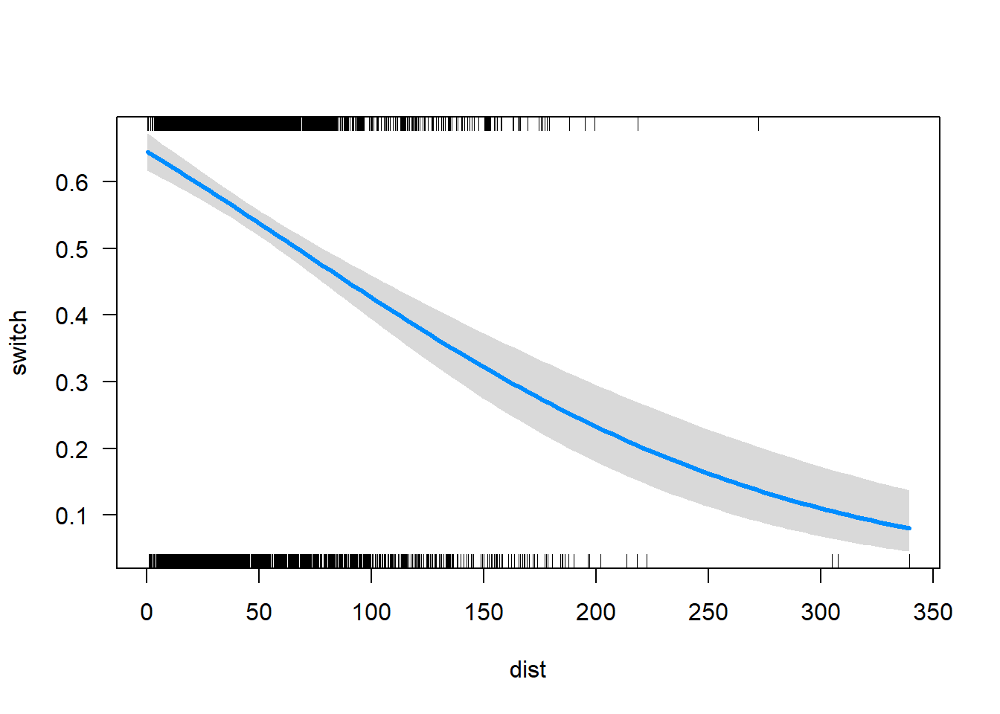

Intro as Árvores de Decisão no R
Rodrigo H. Ozon
21/09/2020
O que é uma árvore de decisão ?
Uma árvore de decisão é uma ferramenta que constrói modelos de regressão na forma de uma estrutura de árvore. As árvores de decisão assumem a forma de um gráfico que ilustra os resultados possíveis de diferentes decisões com base em uma variedade de parâmetros. As árvores de decisão dividem os dados em subconjuntos cada vez menores, normalmente usados para aprendizado de máquina e mineração de dados e são baseados em algoritmos de aprendizado de máquina. As árvores de decisão também são conhecidas como particionamento recursivo.
Palavras-chave: Árvores de decisão, econometria.
O Algoritmo: Como funcionam as árvores de decisão**
- As árvores de decisão são baseadas em um algoritmo chamado ID3 criado por JR Quinlan
- ID3 emprega entropia e ganho de informação para criar uma árvore de decisão
- entropia: é um processo de cima para baixo que divide os dados em subconjuntos que consistem em pontos de dados homogêneos. Se uma amostra é completamente homogênea, a entropia é zero; se a amostra é completamente dividida, a entropia é um.
- ganho de informação: a diminuição da entropia após o conjunto de dados ser dividido em um atributo / parâmetro. As árvores de decisão fazem divisões com base em quais atributos geram o maior ganho de informação, o que resulta nos subconjuntos mais homogêneos. Os valores de entropia são calculados para cada parâmetro inserido no modelo de árvore, para cada decisão, o parâmetro com o maior ganho de informação é selecionado. Em seguida, o processo é repetido.
Componentes da árvore de decisão
As árvores de decisão são compostas por duas partes: nós e folhas.
Nós: representam um teste de decisão, examine uma única variável e mova para outro nó com base no resultado
Folhas: representam o resultado da decisão.
O que posso fazer com uma árvore de decisão ?
As árvores de decisão são úteis para fazer várias previsões. Por exemplo, para prever se um e-mail é SPAM ou não, para prever resultados de saúde, para prever a qual grupo um indivíduo pertence com base em uma variedade de fatores que são especificados no modelo de árvore de decisão.
Vantagens
- simples de entender e interpretar
- ajudar a determinar os resultados esperados de vários cenários
- ajuda a determinar os melhores e os piores valores para diferentes cenários
- pode ser combinado com outras técnicas de decisão
- requerem um grau relativamente baixo de preparação de dados
- pode acomodar dados ausentes
- baixa sensibilidade a outliers
- baixo impacto das relações não lineares entre os parâmetros
- pode lidar com variáveis categóricas e numéricas
- pode traduzir os resultados da árvore de decisão em “regras de decisão”
Desvantagens
- para variáveis categóricas, mais níveis da variável cria mais tendência/viés da árvore de decisão em relação a essa variável
- se a árvore for super ajustada aos dados, os resultados podem ser preditores fracos
O Pacote party do R
O pacote que usaremos para criar árvores de decisão é chamado de ‘party’. É seguro dizer que você vai se divertir criando árvores de decisão.
Para instalar o pacote, use a sintaxe abaixo. Também usaremos os pacotes plyr e readr para alguma estruturação do conjunto de dados.
library(party)## Warning: package 'party' was built under R version 4.2.3library(plyr)## Warning: package 'plyr' was built under R version 4.2.2library(readr)## Warning: package 'readr' was built under R version 4.2.3Para criar árvores de decisão, usaremos a função ctree() do pacote ‘party’. Para obter mais informações sobre a função ctree(), você pode usar a sintaxe abaixo.
?ctree()Uma breve visão da função ctree()
A função ctree() é usada para criar árvores de inferência condicional. Os principais componentes desta função são fórmulas e dados. Outros componentes incluem subconjunto, pesos, controles, xtrafo, ytrafo e scores (pontuações).
argumentos
fórmula: refere-se ao modelo de decisão que estamos usando para fazer previsões. De forma semelhante à ANOVA e aos modelos de regressão em R, a fórmula terá a forma de resultado ~ fator1 + fator2 + … fator (n): onde o resultado é a variável que estamos tentando prever, e cada um dos fatores é a base para os nós de decisão.
data: informa a função de qual conjunto de dados extrair as variáveis listadas no modelo.
subconjunto: é um complemento opcional que especifica um subconjunto de observações a ser usado no processo de adaptação. Deve ser usado se você não quiser ajustar o modelo a todo o conjunto de dados.
pesos: é um vetor opcional que fornece valores ponderados que podem ser usados no processo de ajuste do modelo. Só pode consistir em inteiros não negativos.
sintaxe básica
ctree(fórmula, dados)
Um exemplo prático: o dataset de ofertas de produtos
Esse conjunto de dados apresenta as variáveis relacionadas a coleta de pesquisa feita para identificação de potenciais novos clientes de um determinado novo produto a ser oferecido. Vamos inspecionar ele antes de mais nada:
library(readxl)
url <- "https://github.com/rhozon/datasets/blob/master/ofertas.xlsx?raw=true"
ofertas <- tempfile()
download.file(url, ofertas, mode="wb")
ofertas<-read_excel(path = ofertas, sheet = 1)
str(ofertas)## tibble [500 × 4] (S3: tbl_df/tbl/data.frame)
## $ Futuro Cliente : chr [1:500] "sim" "não" "sim" "não" ...
## $ Idade : chr [1:500] "44.0" "86.0" "17.0" "57.0" ...
## $ Sexo : chr [1:500] "masculino" "feminino" "feminino" "feminino" ...
## $ Método de Pagamento: chr [1:500] "cartão de crédito" "cartão de crédito" "cartão de crédito" "cartão de crédito" ...library(knitr)
library(kableExtra)
kbl(cbind(ofertas)) %>%
kable_paper() %>%
scroll_box(width = "800px", height = "200px")| Futuro Cliente | Idade | Sexo | Método de Pagamento |
|---|---|---|---|
| sim | 44.0 | masculino | cartão de crédito |
| não | 86.0 | feminino | cartão de crédito |
| sim | 17.0 | feminino | cartão de crédito |
| não | 57.0 | feminino | cartão de crédito |
| não | 48.0 | feminino | cartão de crédito |
| não | 39.0 | feminino | cartão de crédito |
| não | 78.0 | masculino | cartão de crédito |
| sim | 38.0 | masculino | cartão de crédito |
| não | 80.0 | masculino | cheque |
| sim | 33.0 | masculino | cartão de crédito |
| sim | 54.0 | masculino | cartão de crédito |
| não | 53.0 | masculino | dinheiro |
| não | 63.0 | masculino | dinheiro |
| não | 91.0 | masculino | dinheiro |
| sim | 17.0 | feminino | cartão de crédito |
| sim | 22.0 | masculino | cartão de crédito |
| sim | 17.0 | feminino | cartão de crédito |
| não | 57.0 | feminino | cartão de crédito |
| sim | 25.0 | masculino | cartão de crédito |
| não | 50.0 | feminino | cartão de crédito |
| não | 46.0 | masculino | dinheiro |
| sim | 28.0 | masculino | cartão de crédito |
| não | 40.0 | feminino | cartão de crédito |
| não | 63.0 | feminino | dinheiro |
| não | 48.0 | feminino | cheque |
| sim | 20.0 | masculino | cartão de crédito |
| não | 56.0 | feminino | cartão de crédito |
| sim | 23.0 | feminino | cartão de crédito |
| sim | 57.0 | masculino | cartão de crédito |
| sim | 24.0 | masculino | cartão de crédito |
| sim | 55.0 | masculino | cartão de crédito |
| sim | 42.0 | masculino | cartão de crédito |
| sim | 22.0 | masculino | dinheiro |
| sim | 58.0 | masculino | cartão de crédito |
| não | 90.0 | feminino | cartão de crédito |
| não | 45.0 | feminino | dinheiro |
| sim | 35.0 | masculino | cartão de crédito |
| sim | 58.0 | masculino | cartão de crédito |
| sim | 49.0 | masculino | cartão de crédito |
| não | 27.0 | feminino | cheque |
| sim | 20.0 | masculino | cartão de crédito |
| não | 51.0 | masculino | dinheiro |
| sim | 19.0 | masculino | cartão de crédito |
| não | 39.0 | feminino | cartão de crédito |
| não | 47.0 | masculino | dinheiro |
| não | 30.0 | feminino | cheque |
| não | 47.0 | feminino | cartão de crédito |
| sim | 21.0 | masculino | cartão de crédito |
| não | 73.0 | feminino | cheque |
| sim | 25.0 | masculino | cheque |
| sim | 33.0 | masculino | cartão de crédito |
| não | 39.0 | masculino | dinheiro |
| não | 42.0 | feminino | dinheiro |
| sim | 34.0 | masculino | cartão de crédito |
| sim | 62.0 | masculino | cartão de crédito |
| não | 37.0 | feminino | dinheiro |
| não | 24.0 | feminino | dinheiro |
| sim | 25.0 | masculino | dinheiro |
| não | 39.0 | feminino | cheque |
| não | 57.0 | feminino | cartão de crédito |
| não | 90.0 | feminino | dinheiro |
| não | 70.0 | feminino | dinheiro |
| não | 52.0 | masculino | dinheiro |
| sim | 53.0 | masculino | cartão de crédito |
| não | 47.0 | feminino | dinheiro |
| não | 51.0 | feminino | cartão de crédito |
| sim | 38.0 | masculino | cartão de crédito |
| não | 33.0 | feminino | cartão de crédito |
| sim | 39.0 | masculino | cartão de crédito |
| não | 74.0 | masculino | cheque |
| não | 56.0 | feminino | cartão de crédito |
| não | 41.0 | feminino | cartão de crédito |
| sim | 25.0 | masculino | cartão de crédito |
| não | 76.0 | feminino | dinheiro |
| não | 64.0 | feminino | dinheiro |
| sim | 26.0 | masculino | cheque |
| não | 79.0 | masculino | cartão de crédito |
| não | 26.0 | feminino | cheque |
| sim | 58.0 | masculino | cartão de crédito |
| não | 43.0 | feminino | cartão de crédito |
| não | 50.0 | feminino | cartão de crédito |
| sim | 50.0 | masculino | cartão de crédito |
| sim | 23.0 | masculino | cartão de crédito |
| não | 37.0 | feminino | cartão de crédito |
| não | 62.0 | feminino | cartão de crédito |
| sim | 34.0 | masculino | cartão de crédito |
| não | 49.0 | feminino | cartão de crédito |
| não | 54.0 | feminino | cartão de crédito |
| não | 42.0 | masculino | dinheiro |
| sim | 29.0 | masculino | cartão de crédito |
| não | 76.0 | masculino | dinheiro |
| sim | 29.0 | masculino | cartão de crédito |
| sim | 18.0 | feminino | cartão de crédito |
| sim | 23.0 | feminino | cartão de crédito |
| sim | 53.0 | masculino | cartão de crédito |
| sim | 59.0 | masculino | cartão de crédito |
| sim | 19.0 | masculino | dinheiro |
| sim | 24.0 | feminino | cartão de crédito |
| não | 73.0 | masculino | cartão de crédito |
| sim | 37.0 | masculino | cartão de crédito |
| sim | 29.0 | masculino | cartão de crédito |
| sim | 62.0 | masculino | cartão de crédito |
| não | 91.0 | feminino | cartão de crédito |
| não | 84.0 | masculino | cartão de crédito |
| não | 63.0 | feminino | dinheiro |
| não | 19.0 | feminino | dinheiro |
| sim | 33.0 | masculino | cheque |
| não | 56.0 | feminino | cartão de crédito |
| sim | 39.0 | masculino | cartão de crédito |
| não | 50.0 | feminino | dinheiro |
| não | 21.0 | feminino | dinheiro |
| sim | 39.0 | masculino | cartão de crédito |
| não | 33.0 | feminino | cartão de crédito |
| não | 78.0 | feminino | cartão de crédito |
| não | 41.0 | feminino | cartão de crédito |
| sim | 33.0 | masculino | dinheiro |
| não | 37.0 | feminino | cartão de crédito |
| sim | 46.0 | masculino | cartão de crédito |
| não | 61.0 | masculino | dinheiro |
| sim | 41.0 | masculino | cartão de crédito |
| sim | 21.0 | masculino | cartão de crédito |
| não | 62.0 | feminino | cartão de crédito |
| sim | 43.0 | masculino | cartão de crédito |
| não | 39.0 | feminino | cartão de crédito |
| não | 52.0 | masculino | cheque |
| não | 24.0 | feminino | dinheiro |
| sim | 64.0 | masculino | cartão de crédito |
| sim | 19.0 | masculino | dinheiro |
| não | 47.0 | feminino | cartão de crédito |
| não | 85.0 | feminino | cartão de crédito |
| não | 19.0 | feminino | dinheiro |
| não | 73.0 | feminino | dinheiro |
| sim | 31.0 | masculino | cheque |
| não | 61.0 | masculino | dinheiro |
| sim | 65.0 | masculino | cartão de crédito |
| sim | 23.0 | masculino | cartão de crédito |
| sim | 22.0 | feminino | cartão de crédito |
| sim | 31.0 | masculino | cartão de crédito |
| não | 36.0 | masculino | dinheiro |
| não | 42.0 | feminino | dinheiro |
| não | 46.0 | masculino | cheque |
| não | 80.0 | feminino | cheque |
| sim | 40.0 | masculino | cartão de crédito |
| sim | 22.0 | masculino | cartão de crédito |
| sim | 25.0 | masculino | cartão de crédito |
| não | 45.0 | masculino | dinheiro |
| sim | 28.0 | masculino | cheque |
| sim | 31.0 | masculino | dinheiro |
| não | 43.0 | masculino | dinheiro |
| não | 51.0 | feminino | cartão de crédito |
| não | 75.0 | feminino | cartão de crédito |
| sim | 53.0 | masculino | cartão de crédito |
| não | 62.0 | feminino | dinheiro |
| sim | 68.0 | masculino | cartão de crédito |
| não | 51.0 | feminino | cartão de crédito |
| não | 38.0 | masculino | dinheiro |
| sim | 21.0 | masculino | dinheiro |
| não | 66.0 | masculino | cheque |
| sim | 41.0 | masculino | cartão de crédito |
| sim | 44.0 | masculino | cartão de crédito |
| não | 23.0 | feminino | dinheiro |
| não | 77.0 | feminino | dinheiro |
| sim | 53.0 | masculino | cartão de crédito |
| não | 43.0 | feminino | cartão de crédito |
| não | 31.0 | feminino | cartão de crédito |
| não | 77.0 | masculino | cartão de crédito |
| sim | 46.0 | masculino | cartão de crédito |
| não | 50.0 | feminino | cheque |
| não | 77.0 | feminino | cheque |
| sim | 29.0 | masculino | cheque |
| não | 64.0 | masculino | dinheiro |
| não | 72.0 | masculino | dinheiro |
| sim | 42.0 | masculino | cartão de crédito |
| não | 45.0 | feminino | cartão de crédito |
| não | 18.0 | feminino | dinheiro |
| não | 43.0 | feminino | dinheiro |
| sim | 31.0 | masculino | cartão de crédito |
| sim | 43.0 | masculino | cartão de crédito |
| sim | 19.0 | masculino | cartão de crédito |
| sim | 28.0 | masculino | cartão de crédito |
| sim | 20.0 | masculino | cheque |
| sim | 53.0 | masculino | cartão de crédito |
| sim | 32.0 | masculino | dinheiro |
| não | 38.0 | feminino | cartão de crédito |
| sim | 32.0 | masculino | cartão de crédito |
| não | 75.0 | feminino | dinheiro |
| não | 46.0 | masculino | dinheiro |
| não | 91.0 | masculino | dinheiro |
| sim | 19.0 | masculino | dinheiro |
| não | 54.0 | feminino | cheque |
| sim | 27.0 | feminino | cartão de crédito |
| sim | 22.0 | masculino | cartão de crédito |
| sim | 42.0 | masculino | cartão de crédito |
| não | 47.0 | feminino | cartão de crédito |
| não | 48.0 | feminino | dinheiro |
| não | 51.0 | masculino | dinheiro |
| não | 73.0 | masculino | dinheiro |
| não | 44.0 | feminino | cartão de crédito |
| não | 58.0 | masculino | dinheiro |
| não | 55.0 | feminino | dinheiro |
| sim | 25.0 | masculino | cartão de crédito |
| não | 42.0 | feminino | dinheiro |
| sim | 47.0 | masculino | cartão de crédito |
| não | 37.0 | masculino | dinheiro |
| sim | 17.0 | feminino | cartão de crédito |
| não | 82.0 | feminino | cartão de crédito |
| sim | 21.0 | masculino | cheque |
| sim | 46.0 | masculino | cartão de crédito |
| sim | 31.0 | masculino | cartão de crédito |
| não | 81.0 | masculino | dinheiro |
| não | 32.0 | feminino | dinheiro |
| não | 19.0 | feminino | dinheiro |
| não | 23.0 | feminino | dinheiro |
| não | 69.0 | feminino | cartão de crédito |
| não | 51.0 | feminino | cartão de crédito |
| sim | 55.0 | masculino | cartão de crédito |
| não | 71.0 | masculino | cheque |
| sim | 28.0 | masculino | cartão de crédito |
| não | 52.0 | feminino | cartão de crédito |
| não | 72.0 | feminino | cartão de crédito |
| sim | 20.0 | masculino | cartão de crédito |
| sim | 48.0 | masculino | cartão de crédito |
| não | 23.0 | feminino | dinheiro |
| não | 78.0 | masculino | cartão de crédito |
| não | 38.0 | feminino | dinheiro |
| sim | 37.0 | masculino | cartão de crédito |
| sim | 45.0 | masculino | cartão de crédito |
| sim | 26.0 | feminino | cartão de crédito |
| sim | 45.0 | masculino | cartão de crédito |
| sim | 21.0 | feminino | cartão de crédito |
| não | 22.0 | feminino | dinheiro |
| não | 84.0 | feminino | cartão de crédito |
| sim | 31.0 | masculino | cheque |
| sim | 30.0 | masculino | dinheiro |
| sim | 30.0 | feminino | cartão de crédito |
| sim | 20.0 | masculino | cartão de crédito |
| não | 28.0 | feminino | cheque |
| sim | 17.0 | masculino | cartão de crédito |
| não | 38.0 | feminino | cartão de crédito |
| sim | 62.0 | masculino | cartão de crédito |
| não | 52.0 | feminino | cartão de crédito |
| sim | 20.0 | feminino | cartão de crédito |
| sim | 35.0 | masculino | cartão de crédito |
| não | 75.0 | masculino | cartão de crédito |
| não | 32.0 | feminino | cheque |
| não | 53.0 | masculino | cheque |
| sim | 54.0 | masculino | cartão de crédito |
| não | 65.0 | masculino | cheque |
| sim | 48.0 | masculino | cartão de crédito |
| não | 38.0 | feminino | dinheiro |
| não | 75.0 | masculino | cheque |
| sim | 17.0 | masculino | dinheiro |
| sim | 47.0 | masculino | cartão de crédito |
| sim | 35.0 | masculino | dinheiro |
| sim | 22.0 | masculino | cartão de crédito |
| não | 82.0 | masculino | cartão de crédito |
| sim | 24.0 | masculino | cartão de crédito |
| não | 66.0 | masculino | dinheiro |
| não | 41.0 | feminino | dinheiro |
| não | 48.0 | masculino | cheque |
| sim | 44.0 | masculino | cartão de crédito |
| não | 33.0 | feminino | cartão de crédito |
| não | 81.0 | feminino | cartão de crédito |
| sim | 32.0 | masculino | dinheiro |
| não | 37.0 | feminino | dinheiro |
| sim | 29.0 | feminino | cartão de crédito |
| não | 42.0 | feminino | cheque |
| não | 50.0 | feminino | cartão de crédito |
| sim | 28.0 | masculino | dinheiro |
| sim | 54.0 | masculino | cartão de crédito |
| não | 29.0 | feminino | cheque |
| sim | 48.0 | masculino | cartão de crédito |
| sim | 34.0 | masculino | cartão de crédito |
| sim | 18.0 | masculino | cartão de crédito |
| sim | 21.0 | masculino | cartão de crédito |
| não | 32.0 | feminino | cartão de crédito |
| não | 39.0 | feminino | cartão de crédito |
| não | 59.0 | feminino | dinheiro |
| sim | 29.0 | feminino | cartão de crédito |
| sim | 28.0 | masculino | cartão de crédito |
| sim | 44.0 | masculino | cartão de crédito |
| sim | 61.0 | masculino | cartão de crédito |
| sim | 41.0 | masculino | cartão de crédito |
| não | 50.0 | masculino | dinheiro |
| não | 44.0 | masculino | dinheiro |
| sim | 59.0 | masculino | cartão de crédito |
| sim | 21.0 | masculino | cartão de crédito |
| não | 40.0 | feminino | cartão de crédito |
| sim | 31.0 | masculino | cheque |
| sim | 60.0 | masculino | cartão de crédito |
| sim | 28.0 | masculino | cartão de crédito |
| não | 54.0 | masculino | dinheiro |
| sim | 67.0 | masculino | cartão de crédito |
| não | 47.0 | masculino | dinheiro |
| não | 43.0 | feminino | cartão de crédito |
| não | 33.0 | feminino | cheque |
| não | 51.0 | feminino | cartão de crédito |
| não | 35.0 | feminino | cartão de crédito |
| sim | 24.0 | feminino | cartão de crédito |
| não | 71.0 | feminino | dinheiro |
| sim | 25.0 | masculino | cartão de crédito |
| sim | 21.0 | masculino | dinheiro |
| sim | 26.0 | masculino | cartão de crédito |
| sim | 67.0 | masculino | cartão de crédito |
| não | 71.0 | feminino | dinheiro |
| sim | 61.0 | masculino | cartão de crédito |
| sim | 25.0 | feminino | cartão de crédito |
| sim | 20.0 | masculino | cartão de crédito |
| não | 82.0 | masculino | cartão de crédito |
| não | 54.0 | feminino | cheque |
| sim | 26.0 | masculino | dinheiro |
| não | 22.0 | feminino | dinheiro |
| sim | 71.0 | masculino | cartão de crédito |
| sim | 26.0 | feminino | cartão de crédito |
| sim | 46.0 | masculino | cartão de crédito |
| não | 48.0 | feminino | dinheiro |
| não | 53.0 | feminino | cartão de crédito |
| não | 57.0 | feminino | dinheiro |
| não | 56.0 | masculino | dinheiro |
| não | 52.0 | feminino | cartão de crédito |
| não | 41.0 | masculino | cheque |
| não | 40.0 | feminino | cartão de crédito |
| sim | 22.0 | masculino | cartão de crédito |
| não | 55.0 | feminino | cartão de crédito |
| sim | 31.0 | masculino | dinheiro |
| não | 69.0 | masculino | dinheiro |
| não | 72.0 | feminino | cartão de crédito |
| sim | 62.0 | masculino | cartão de crédito |
| sim | 67.0 | masculino | cartão de crédito |
| não | 49.0 | feminino | cartão de crédito |
| não | 32.0 | feminino | cheque |
| sim | 31.0 | masculino | cartão de crédito |
| não | 80.0 | feminino | dinheiro |
| sim | 27.0 | masculino | cartão de crédito |
| sim | 63.0 | masculino | cartão de crédito |
| sim | 43.0 | masculino | cartão de crédito |
| não | 72.0 | masculino | dinheiro |
| sim | 67.0 | masculino | cartão de crédito |
| sim | 35.0 | masculino | cartão de crédito |
| não | 56.0 | feminino | cartão de crédito |
| não | 58.0 | feminino | cartão de crédito |
| sim | 26.0 | masculino | dinheiro |
| sim | 22.0 | feminino | cartão de crédito |
| sim | 70.0 | masculino | cartão de crédito |
| sim | 27.0 | masculino | cartão de crédito |
| não | 79.0 | feminino | cartão de crédito |
| sim | 24.0 | feminino | cartão de crédito |
| não | 56.0 | feminino | dinheiro |
| não | 69.0 | feminino | cartão de crédito |
| não | 40.0 | feminino | cartão de crédito |
| sim | 51.0 | masculino | cartão de crédito |
| não | 40.0 | masculino | dinheiro |
| não | 38.0 | feminino | cartão de crédito |
| não | 24.0 | feminino | cheque |
| não | 62.0 | feminino | cheque |
| não | 40.0 | feminino | cartão de crédito |
| não | 54.0 | feminino | dinheiro |
| sim | 32.0 | masculino | cartão de crédito |
| não | 46.0 | feminino | cartão de crédito |
| não | 40.0 | feminino | cartão de crédito |
| sim | 35.0 | masculino | cartão de crédito |
| sim | 35.0 | masculino | cartão de crédito |
| sim | 64.0 | masculino | cartão de crédito |
| não | 41.0 | masculino | cheque |
| não | 56.0 | feminino | cartão de crédito |
| sim | 20.0 | feminino | cartão de crédito |
| sim | 27.0 | feminino | cartão de crédito |
| sim | 54.0 | masculino | cartão de crédito |
| não | 42.0 | feminino | dinheiro |
| sim | 41.0 | masculino | cartão de crédito |
| sim | 21.0 | masculino | dinheiro |
| não | 73.0 | feminino | cartão de crédito |
| sim | 35.0 | masculino | cartão de crédito |
| não | 48.0 | masculino | dinheiro |
| não | 90.0 | masculino | cartão de crédito |
| não | 62.0 | feminino | dinheiro |
| sim | 48.0 | masculino | cartão de crédito |
| não | 73.0 | masculino | dinheiro |
| não | 79.0 | feminino | dinheiro |
| não | 31.0 | feminino | dinheiro |
| sim | 23.0 | feminino | cartão de crédito |
| não | 45.0 | masculino | dinheiro |
| não | 46.0 | feminino | cartão de crédito |
| sim | 61.0 | masculino | cartão de crédito |
| sim | 29.0 | masculino | cartão de crédito |
| não | 42.0 | feminino | cartão de crédito |
| não | 46.0 | masculino | dinheiro |
| não | 50.0 | feminino | cartão de crédito |
| não | 43.0 | feminino | cartão de crédito |
| sim | 19.0 | masculino | cartão de crédito |
| não | 75.0 | masculino | cartão de crédito |
| sim | 26.0 | masculino | cartão de crédito |
| não | 78.0 | masculino | cartão de crédito |
| sim | 37.0 | masculino | cartão de crédito |
| não | 29.0 | feminino | dinheiro |
| sim | 27.0 | masculino | dinheiro |
| não | 52.0 | feminino | dinheiro |
| sim | 63.0 | masculino | cartão de crédito |
| sim | 58.0 | masculino | cartão de crédito |
| sim | 50.0 | masculino | cartão de crédito |
| não | 82.0 | feminino | dinheiro |
| não | 43.0 | feminino | dinheiro |
| não | 76.0 | masculino | dinheiro |
| não | 61.0 | feminino | cartão de crédito |
| sim | 30.0 | feminino | cartão de crédito |
| sim | 47.0 | masculino | cartão de crédito |
| sim | 50.0 | masculino | cartão de crédito |
| sim | 28.0 | masculino | cartão de crédito |
| sim | 44.0 | masculino | cartão de crédito |
| sim | 40.0 | masculino | cartão de crédito |
| sim | 21.0 | feminino | cartão de crédito |
| não | 34.0 | feminino | dinheiro |
| sim | 30.0 | masculino | dinheiro |
| não | 49.0 | feminino | cartão de crédito |
| não | 38.0 | feminino | cartão de crédito |
| sim | 28.0 | masculino | cartão de crédito |
| sim | 36.0 | masculino | cartão de crédito |
| sim | 31.0 | masculino | cartão de crédito |
| não | 30.0 | feminino | dinheiro |
| sim | 25.0 | masculino | dinheiro |
| não | 49.0 | feminino | dinheiro |
| não | 64.0 | feminino | cartão de crédito |
| sim | 56.0 | masculino | cartão de crédito |
| não | 70.0 | feminino | cartão de crédito |
| não | 32.0 | feminino | cartão de crédito |
| sim | 22.0 | feminino | cartão de crédito |
| não | 43.0 | masculino | dinheiro |
| sim | 21.0 | masculino | cartão de crédito |
| não | 39.0 | feminino | cartão de crédito |
| sim | 19.0 | masculino | cartão de crédito |
| sim | 25.0 | masculino | dinheiro |
| não | 79.0 | feminino | cartão de crédito |
| não | 84.0 | masculino | cartão de crédito |
| sim | 20.0 | masculino | dinheiro |
| sim | 24.0 | masculino | cheque |
| sim | 26.0 | masculino | cartão de crédito |
| sim | 22.0 | masculino | cartão de crédito |
| sim | 24.0 | feminino | cartão de crédito |
| não | 50.0 | feminino | dinheiro |
| sim | 20.0 | feminino | cartão de crédito |
| não | 33.0 | feminino | cartão de crédito |
| sim | 26.0 | masculino | cartão de crédito |
| sim | 71.0 | masculino | cartão de crédito |
| não | 41.0 | masculino | dinheiro |
| não | 60.0 | masculino | dinheiro |
| sim | 37.0 | masculino | cartão de crédito |
| sim | 71.0 | masculino | cartão de crédito |
| sim | 29.0 | feminino | cartão de crédito |
| sim | 33.0 | masculino | cartão de crédito |
| sim | 19.0 | masculino | cartão de crédito |
| não | 38.0 | feminino | cartão de crédito |
| sim | 22.0 | masculino | cartão de crédito |
| sim | 39.0 | masculino | cartão de crédito |
| não | 35.0 | feminino | dinheiro |
| não | 53.0 | feminino | cartão de crédito |
| não | 36.0 | feminino | dinheiro |
| não | 35.0 | feminino | cartão de crédito |
| sim | 21.0 | masculino | cartão de crédito |
| não | 77.0 | masculino | cartão de crédito |
| sim | 21.0 | masculino | cartão de crédito |
| sim | 37.0 | masculino | cartão de crédito |
| não | 56.0 | masculino | cheque |
| sim | 28.0 | feminino | cartão de crédito |
| não | 37.0 | feminino | dinheiro |
| sim | 60.0 | masculino | cartão de crédito |
| sim | 63.0 | masculino | cartão de crédito |
| não | 35.0 | feminino | cheque |
| não | 80.0 | masculino | cartão de crédito |
| sim | 32.0 | masculino | cartão de crédito |
| sim | 55.0 | masculino | cartão de crédito |
| não | 42.0 | feminino | cartão de crédito |
| não | 32.0 | feminino | cartão de crédito |
| não | 63.0 | feminino | cartão de crédito |
| não | 63.0 | masculino | dinheiro |
| não | 49.0 | feminino | cartão de crédito |
| não | 67.0 | masculino | dinheiro |
| não | 50.0 | masculino | dinheiro |
| não | 34.0 | feminino | cartão de crédito |
| sim | 33.0 | masculino | cartão de crédito |
| sim | 49.0 | masculino | cartão de crédito |
| sim | 27.0 | masculino | dinheiro |
| não | 27.0 | feminino | dinheiro |
| sim | 60.0 | masculino | cartão de crédito |
| não | 67.0 | masculino | dinheiro |
| não | 43.0 | masculino | cheque |
| não | 85.0 | masculino | cartão de crédito |
| não | 77.0 | feminino | dinheiro |
| sim | 40.0 | masculino | cartão de crédito |
| não | 45.0 | masculino | dinheiro |
| não | 17.0 | feminino | dinheiro |
| sim | 40.0 | masculino | cartão de crédito |
| não | 60.0 | feminino | dinheiro |
| não | 37.0 | feminino | cartão de crédito |
| não | 46.0 | masculino | cheque |
| não | 39.0 | masculino | dinheiro |
| não | 50.0 | feminino | cartão de crédito |
| sim | 72.0 | masculino | cartão de crédito |
| sim | 33.0 | masculino | dinheiro |
| não | 77.0 | feminino | dinheiro |
| não | 64.0 | feminino | cartão de crédito |
Vamos renomear as variáveis para o R ler sem problemas:
library(tidyverse)## Warning: package 'tidyverse' was built under R version 4.2.3## Warning: package 'ggplot2' was built under R version 4.2.3## Warning: package 'tibble' was built under R version 4.2.3## Warning: package 'tidyr' was built under R version 4.2.3## Warning: package 'purrr' was built under R version 4.2.2## Warning: package 'dplyr' was built under R version 4.2.3## Warning: package 'stringr' was built under R version 4.2.2## Warning: package 'forcats' was built under R version 4.2.3## Warning: package 'lubridate' was built under R version 4.2.3ofertas <- ofertas %>%
rename(futurocliente='Futuro Cliente', metpgto= 'Método de Pagamento')
str(ofertas)## tibble [500 × 4] (S3: tbl_df/tbl/data.frame)
## $ futurocliente: chr [1:500] "sim" "não" "sim" "não" ...
## $ Idade : chr [1:500] "44.0" "86.0" "17.0" "57.0" ...
## $ Sexo : chr [1:500] "masculino" "feminino" "feminino" "feminino" ...
## $ metpgto : chr [1:500] "cartão de crédito" "cartão de crédito" "cartão de crédito" "cartão de crédito" ...Agora transformaremos as variáveis como fatores para o R ler:
ofertas<-ofertas%>%
mutate(futurocliente=as.factor(futurocliente),
metpgto=as.factor(metpgto),
Idade=as.integer(Idade),
Sexo=as.factor(Sexo))
str(ofertas)## tibble [500 × 4] (S3: tbl_df/tbl/data.frame)
## $ futurocliente: Factor w/ 2 levels "não","sim": 2 1 2 1 1 1 1 2 1 2 ...
## $ Idade : int [1:500] 44 86 17 57 48 39 78 38 80 33 ...
## $ Sexo : Factor w/ 2 levels "feminino","masculino": 2 1 1 1 1 1 2 2 2 2 ...
## $ metpgto : Factor w/ 3 levels "cartão de crédito",..: 1 1 1 1 1 1 1 1 2 1 ...Note que a única variável que mudamos para inteira (discreta) é a Idade dos respondentes da pesquisa. Como exercício rode a árvore de decisão a seguir com essa variável como um fator e veja a implicação.
Agora construimos a árvore de decisão sendo que a variável final; que é a que se refere a ser um cliente ou não será a dependente aqui.
arvore1<-ctree(futurocliente~Idade,data=ofertas)
plot(arvore1)
Interpretando a árvore de decisão
Para entender o que a árvore de decisão está dizendo, queremos começar com a raiz da árvore (o primeiro nó de decisão). Olhando para o primeiro nó de decisão, sabemos que a variável pela qual a decisão é determinada é a Idade dos respondentes. Existem duas folhas ou ramificações desse nó: primeiro, se as idades forem menor ou iguais a 35 anos, elas cairão no grupo de sim e não com uma proporção em um pouco mais de 80% de chance de se tornarem clientes se as idades forem também menores ou iguais aos 31 anos. Essa razão de chance de se tornar cliente dimunui neste mesmo nó se a faixa etária for dos 31 aos 35 anos na ordem dos quase 60%.
Este primeiro grupo, indicado pelo primeiro gráfico do lado esquerdo, nos diz que existem 143 pessoas com idades menores ou iguais aos 31 anos. Já no nó 4 ao lado temos um grupo com um total de 39 indivíduos com idades maiores aos 31 anos de idade e até os 35 que reduzem a razão de chance de se tornarem clientes em relação ao nó 3 ao seu lado esquerdo (da casa de um pouco acima dos 80% de chance para algo um pouco abaixo dos 60%)
Em seguida, passamos para o segundo nó. Novamente, a variável pela qual a decisão é determinada é se será um futuro cliente sim ou não. As duas folhas aqui são menores ou iguais a 72 ou maiores que 35 anos de idade. Note que se o indivíduo tiver uma faixa de idades entre os 35 e menos que 72 anos, existirá uma proporção de um pouco menos de 40% de chance de ser cliente, o que não ocorre com aqueles que tem mais de 72 anos, sendo um grupo passível de ser descartado dessa possibilidade.
Somente com essa variável explicativa aqui considerada, concluímos então que o grupo de indivíduos com menos de 35 anos e numa maior proporção naquela faixa menor aos 31 anos apresenta uma maior chance de se tornar cliente 143 pessoas.
Outra árvore
Podemos visualizar o modelo a ser construído, observando a relação entre a variável a ser prevista em função de uma única explicativa, caso a caso, para compararmos suas proporções e ao final montarmos uma árvore completa.
Veremos como a árvore se comporta quando desejamos ver o sexo para a chance de ser futuro cliente:
arvore2<-ctree(futurocliente~Sexo,data=ofertas)
plot(arvore2)
Fica fácil vermos que os homens tem mais chance de se tornarem futuros clientes do que as mulheres (temos quase 80% contra somente quase outros 20% das mulheres).
A opção de método de pagamento
Vamos ver como fica a questão da razão de chance pela escolha de método de pagamento somente:
arvore3<-ctree(futurocliente~metpgto,data=ofertas)
plot(arvore3)Como a visualização acima é autoexplicativa, a interpretação segue o mesmo princípio do exercício anterior.
A árvore de decisão com todas as variáveis
arvorecompleta<-ctree(futurocliente~Idade+Sexo+metpgto,data=ofertas)
plot(arvorecompleta)As barras em escuro são as proporções de Sim e as claras as dos Nãos. Assim, vemos que o maior quantitativo de escolha das pessoas são:
Indivíduos do sexo masculino que pagam com cartão de crédito e que tem menos de 72 anos de idade: veja n=169;
O segundo maior grupo entra naquele das pessoas do sexo feminino com mais de 30 anos de idade e que ainda não são potenciais futuros clientes: veja n=162
Interessante notarmos que o grupo de pessoas do sexo masculino que optam por pagar com cheque ou dinheiro e que tem menos de 35 anos refletem uma parcela significativa de potenciais futuros clientes: veja o nó 4, n=37.
Como evitar o sobreajuste da árvore de decisão
Existem duas abordagens para evitar o ajuste excessivo de uma árvore de decisão aos seus dados.
pré-poda: evita que a árvore cresça mais cedo, antes que os dados de treinamento sejam perfeitamente classificados
pós-poda: ou pós-poda, a árvore está perfeitamente classificada e, depois de criada, podar ou aparar a árvore
O pós-corte é a abordagem mais comum porque muitas vezes é difícil estimar quando parar de crescer a árvore. O importante é definir os critérios que determinam o tamanho final correto da árvore.
conjunto de validação: use um conjunto de dados diferente, diferente do conjunto de treinamento, para avaliar os nós pós-corte da árvore de decisão. Freqüentemente, o conjunto de dados é dividido em dois conjuntos de dados, o conjunto de treinamento e o conjunto de validação. A árvore de decisão é construída no conjunto de treinamento, então qualquer pós-corte é feito no conjunto de validação.
teste estatístico: crie a árvore de decisão usando o conjunto de treinamento e, em seguida, aplique testes estatísticos (estimativa de erro ou qui-quadrado) para determinar se a poda ou expansão de um nó produz uma melhoria além do conjunto de treinamento. Para obter mais informações sobre esses testes estatísticos, consulte “Dados de sobreajuste” na seção de referências a seguir.
Das árvores para random forests
Varian (2014) aponta a crescente disponibilidade de uma grande quantidade de dados sobre transações econômicas por causa dos computadores. Ele escreve (p. 3):
‘Técnicas de machine learning … podem permitir maneiras mais eficazes de modelar relacionamentos complexos. … Meu conselho padrão para estudantes de graduação hoje em dia é ir para a ciência da computação departamento e fazer um curso de machine learning’.
Breiman (2001, p. 199) escreve:
“Existem duas culturas no uso de estatísticas modelagem para chegar a conclusões de dados. Supõe-se que os dados são gerados por um determinado modelo de dados estocástico. O outro usa modelos algorítmicos e trata o mecanismo de dados como desconhecido. … Se nosso objetivo como campo é usar dados para resolver problemas, então precisamos nos afastar da dependência exclusiva de modelos de dados e adotar um conjunto de ferramentas mais diversificado.”
Árvores são uma técnica computacionalmente intensiva não paramétrica para predição, em que o espaço do preditor é dividido recursivamente em regiões. As árvores são facilmente interpretáveis, mas podem ser instáveis. Uma maneira de melhorar a previsão é combinar as árvores.
Primeiro temos uma ideia das árvores e depois consideramos as random forests.
Biau e Scornet (p. 197) endossam nossa atenção às random forests:
“O algoritmo aleatório random forests, proposto por L. Breiman em 2001, tem sido extremamente bem sucedido como um propósito geral de classificação e método de regressão. A abordagem, que combina várias árvores de decisão aleatórias e agrega suas previsões por média, tem mostrado excelente desempenho em configurações onde o número de variáveis é muito maior do que o número de observações. Além disso, é versátil o suficiente para ser aplicado a problemas de grande escala, é facilmente adaptado a várias tarefas de aprendizagem ad hoc, e retorna medidas de importância variável”.
Exemplo simples de árvore com dados sintéticos
Criamos alguns dados sintéticos e, em seguida, plotamos para ver seus recursos.
x.tree <- c(rep(1:5,20), rep(6:10,20), rep(11:15,20))
y.tree <- c(rep(c(0,1,0,0,1),20), rep(c(1,0,1,1,1),20), rep(c(0,0,0,0,1),20))
xy.tree <- data.frame(x.tree, y.tree)
library(tidyverse)
# plotando os dados
graf1<-ggplot(xy.tree, aes(x = x.tree, y = y.tree)) +
geom_jitter(height = 0.1, width = 0.1) +
geom_smooth()
library(plotly)## Warning: package 'plotly' was built under R version 4.2.2ggplotly(graf1)A relação entre y.tree e x.tree é muito não linear. Nós vamos agora ajuste uma árvore de classificação aos dados. Usamos o pacote rpart (Therneau e Atkinson 2019). Usamos a mesma sintaxe que usamos para regressão.
library(rpart)
xy.tree_t <- rpart(y.tree ~ x.tree, data = xy.tree, method = "class")
class(xy.tree_t)## [1] "rpart"Agora usamos o pacote rpart.plot (Milborrow 2019) para plotar a árvore que nós encaixamos.
library(rpart.plot)## Warning: package 'rpart.plot' was built under R version 4.2.3prp(xy.tree_t, extra = 1)A Figura acima é o gráfico da árvore de classificação. Ele prevê que y.tree será um ou zero dependendo do valor de x.tree; nós descemos a árvore de acordo com o valor de x.tree. Se x.tree for 9, por exemplo, começamos no topo, x.tree não é maior que ou igual a 11, então descemos a árvore para a direita. Na próxima etapa, x.tree (= 9) é não inferior a 5, então, novamente, descemos para a direita. x.tree (= 9) não é menor que 8, então vamos para a direita. A previsão é que y.tree para x.tree = 9 é 1. Had x.tree tinha 8 ou 10 teríamos seguido o mesmo caminho descendo a árvore. tem 60 observações com x.árvore = 8, 9 ou 10, e todas têm um valor de y.árvore de 1. Vemos agora um exemplo relativo ao arsênico em poços em Bangladesh.
Exemplo: arsênico em Wells em Bangladesh
Apresentamos um exemplo onde temos uma resposta binária, e economistas iriam geralmente usar regressão logística nesta situação. Ajustaremos uma regressão logística, então uma árvore para os mesmos dados, para que possamos conectar a árvore a um método mais familiar.
Gelman e Hill (2017) apresentam um exemplo de arsênico em poços em Bangladesh.
Nesta região, alguns poços possuem altos níveis de arsênio, que é um veneno cumulativo. Uma equipe de pesquisa mediu o nível de arsênico e rotulou os poços; depois eles voltou alguns anos depois para ver quem havia mudado para um poço mais seguro conduzindo uma pesquisa.
Usaremos o exemplo para ilustração e, portanto, nos concentramos nas seguintes variáveis:
- switch: se a casa mudou ou não, (2) dist: a distância em metros até o poço seguro mais próximo conhecido e (3) arsenic: o nível de arsênico do bem do entrevistado.
library(utf8)## Warning: package 'utf8' was built under R version 4.2.3wells<-read.csv(file="https://raw.githubusercontent.com/rhozon/datasets/master/wells1.csv",head=TRUE,sep=";")
str(wells)## 'data.frame': 3020 obs. of 9 variables:
## $ id : int 1 2 3 4 5 6 7 8 9 10 ...
## $ switch : int 1 1 0 1 1 1 1 1 1 1 ...
## $ arsenic: num 2.36 0.71 2.07 1.15 1.1 3.9 2.97 3.24 3.28 2.52 ...
## $ dist : num 16.8 47.3 21 21.5 40.9 ...
## $ assoc : int 0 0 0 0 1 1 1 0 1 1 ...
## $ educ : int 0 0 10 12 14 9 4 10 0 0 ...
## $ X : logi NA NA NA NA NA NA ...
## $ X.1 : logi NA NA NA NA NA NA ...
## $ X.2 : logi NA NA NA NA NA NA ...wells<-wells%>%
select(-X,-X.1,-X.2)
str(wells)## 'data.frame': 3020 obs. of 6 variables:
## $ id : int 1 2 3 4 5 6 7 8 9 10 ...
## $ switch : int 1 1 0 1 1 1 1 1 1 1 ...
## $ arsenic: num 2.36 0.71 2.07 1.15 1.1 3.9 2.97 3.24 3.28 2.52 ...
## $ dist : num 16.8 47.3 21 21.5 40.9 ...
## $ assoc : int 0 0 0 0 1 1 1 0 1 1 ...
## $ educ : int 0 0 10 12 14 9 4 10 0 0 ...Ajustamos uma regressão logística de distância de ativação e arsênico.
fit <- glm(switch ~ dist + arsenic, family = binomial( link = logit), data = wells)
summary(fit)##
## Call:
## glm(formula = switch ~ dist + arsenic, family = binomial(link = logit),
## data = wells)
##
## Deviance Residuals:
## Min 1Q Median 3Q Max
## -2.6355 -1.2141 0.7784 1.0701 1.7086
##
## Coefficients:
## Estimate Std. Error z value Pr(>|z|)
## (Intercept) 0.003287 0.079466 0.041 0.967
## dist -0.008971 0.001043 -8.598 <2e-16 ***
## arsenic 0.460863 0.041388 11.135 <2e-16 ***
## ---
## Signif. codes: 0 '***' 0.001 '**' 0.01 '*' 0.05 '.' 0.1 ' ' 1
##
## (Dispersion parameter for binomial family taken to be 1)
##
## Null deviance: 4118.1 on 3019 degrees of freedom
## Residual deviance: 3930.6 on 3017 degrees of freedom
## AIC: 3936.6
##
## Number of Fisher Scoring iterations: 4O pacote visreg (Breheny e Burchett 2017) é especialmente útil para plotagem regressões não lineares.
library(visreg)## Warning: package 'visreg' was built under R version 4.2.3visreg(fit,"dist",
scale = "response")
visreg(fit,"arsenic",
scale = "response")
As regressões logísticas das figuras acima estão nas linhas do que é esperado.
Na primeira figura, a probabilidade prevista de comutação cai de cerca de 0,6, quando a distância está perto de zero, a cerca de 0,1 quando a distância é cerca de 275. Na figura seguinte, a probabilidade de comutação aumenta de cerca de 0,5 quando o arsênio está perto de zero para cerca de 0,95 quando o arsênico está perto de 8.
Agora ajustamos uma árvore de classificação.
library(rpart)
Bang <- rpart(switch ~ dist + arsenic, data = wells, method = "class")
library(rpart.plot)
prp(Bang, extra = 1)Na figura acima vemos a árvore de classificação. No topo, temos uma divisão no arsênico menos de 1,1. Se não, e se a distância for menor que 82, então prevemos que a mudança Ocorreria. Se o arsênio não for menor que 1,1 e a distância for maior ou igual a 82, a comutação não ocorrerá.
Se o arsênico for menor que 0,56, a previsão é de não troca. Uma árvore como a da figura acima é facilmente interpretável. Usamos um gráfico de dispersão de arsênio versus distância e plotamos as diferentes regiões em o espaço do preditor correspondente às divisões da árvore de classificação.
ggplot(wells, aes(x = dist, y = arsenic, colour = factor(switch))) +
geom_point() +
geom_hline(yintercept = 1.1) +
geom_hline(yintercept = 0.56) +
geom_vline(xintercept = 69) +
geom_vline(xintercept = 82)Exemplo: Lei de divulgação de hipoteca residencial
Nesta seção, primeiro ajustaremos uma árvore de classificação e, em seguida, aplicaremos a random forest método. Embora a saída de uma árvore seja facilmente interpretável, em geral, um floresta dará previsões mais precisas.
Varian (2014, p.14) resumiu o método do random forest:
Random forests is a technique that uses multiple trees.Atypical procedure uses the following steps.
- Choose a bootstrap sample of the observations and start to grow a tree.
- At each node of the tree, choose a random sample of the predictors to make the next decision. Do not prune the trees.
- Repeat this process many times to grow a forest of trees.
- In order to determine the classification of a new observation, have each tree make a classification and use a majority vote for the final prediction.
Agora vemos como podemos prever se os candidatos a hipotecas em Boston seriam:
negou (negação variável);
empréstimos hipotecários ou não, com base em vários preditores.
Os dados estão disponíveis no pacote Ecdat.
library(Ecdat)## Warning: package 'Ecdat' was built under R version 4.2.3## Warning: package 'Ecfun' was built under R version 4.2.3data(Hdma)
names(Hdma)[11] <- "condo"
set.seed(111)library(tidyverse)
hdma <- Hdma %>%
na.omit()
glimpse(hdma)## Rows: 2,380
## Columns: 13
## $ dir <dbl> 0.221, 0.265, 0.372, 0.320, 0.360, 0.240, 0.350, 0.280, 0.310, …
## $ hir <dbl> 0.221, 0.265, 0.248, 0.250, 0.350, 0.170, 0.290, 0.220, 0.240, …
## $ lvr <dbl> 0.8000000, 0.9218750, 0.9203980, 0.8604651, 0.6000000, 0.510526…
## $ ccs <dbl> 5, 2, 1, 1, 1, 1, 1, 2, 2, 2, 1, 1, 1, 1, 1, 2, 1, 2, 2, 2, 6, …
## $ mcs <dbl> 2, 2, 2, 2, 1, 1, 2, 2, 2, 1, 2, 2, 2, 1, 1, 1, 1, 1, 2, 2, 1, …
## $ pbcr <fct> no, no, no, no, no, no, no, no, no, no, no, no, no, no, no, no,…
## $ dmi <fct> no, no, no, no, no, no, no, no, yes, no, no, no, yes, no, no, n…
## $ self <fct> no, no, no, no, no, no, no, no, no, no, no, no, no, no, no, no,…
## $ single <fct> no, yes, no, no, no, no, yes, no, no, yes, yes, yes, no, no, no…
## $ uria <dbl> 3.9, 3.2, 3.2, 4.3, 3.2, 3.9, 3.9, 1.8, 3.1, 3.9, 3.1, 4.3, 4.3…
## $ condo <dbl> 0, 0, 0, 0, 0, 0, 1, 0, 0, 0, 1, 0, 0, 0, 0, 0, 0, 0, 0, 0, 0, …
## $ black <fct> no, no, no, no, no, no, no, no, no, no, no, no, no, no, no, no,…
## $ deny <fct> no, no, no, no, no, no, no, no, yes, no, no, no, yes, no, no, n…ntão ajustamos uma árvore de decisão:
library(rpart)
hm.tree <- rpart(deny ~., data = hdma, method = "class")Agora plotamos a árvore de classificação:
library(rpart.plot)
prp(hm.tree, extra = 1)A divisão superior na árvore é da variável dmi - seguro hipotecário negado. o próxima variável na árvore é pbcr (registro de crédito malparado), seguido por dir (razão da dívida de pagamentos em relação ao rendimento total) e ccs (pontuação de crédito ao consumidor).
Agora usamos o algoritmo de random forest
library(randomForest)## Warning: package 'randomForest' was built under R version 4.2.3set.seed(1234)
rf.fit <- randomForest(deny ~ ., data = hdma, importance = TRUE)
rf.fit##
## Call:
## randomForest(formula = deny ~ ., data = hdma, importance = TRUE)
## Type of random forest: classification
## Number of trees: 500
## No. of variables tried at each split: 3
##
## OOB estimate of error rate: 9.45%
## Confusion matrix:
## no yes class.error
## no 2061 34 0.01622912
## yes 191 94 0.67017544Na saída, vemos que 500 árvores foram ajustadas e 3 variáveis foram testadas em cada Dividido. Uma característica das random forests é que existe um tipo embutido de validação de as previsões feitas. Uma vez que as amostras de bootstrap são usadas para cultivar árvores, algumas amostras estão fora do saco e não são usados. Na saída, vemos que a taxa de erro fora da bolsa é 9,45%. É muito mais fácil ajustar um modelo aos dados de amostra; o mais difícil é para um modelo para ajustar os dados fora da amostra.
É a ênfase na precisão preditiva que é a marca registrada das random forests e métodos relacionados. Breiman escreve:
The most obvious way to see how well the model box emulates nature’s box is this: put a case x down nature’s box getting an output y. Similarly, put the same case x down the model box getting an output y’. The closeness of y and y’ is a measure of how good the emulation is. For a data model, this translates as: fit the parameters in your model by using the data, then, using the model, predict the data and see how good the prediction is.
Podemos obter previsões da random forest com:
hdma$random_forest_prediction <- predict(rf.fit)Os próprios dados contêm a variável deny, ou seja, esta é a saída da caixa da natureza (em Palavras de Breiman na citação acima). Fazemos um gráfico de dispersão das previsões de a random forest versus a saída da caixa da natureza. A Figura plotada a seguir é a contrapartida gráfica da Matriz de confusão relatada na saída da random forest acima.
ggplot(hdma, aes(y = random_forest_prediction, x = deny)) +
geom_jitter(height = 0.2, width = 0.2)Varian (2014, p. 15) escreveu:
“Um defeito das random forests é que elas são um pouco caixa preta - eles não oferecem resumos simples de relacionamentos nos dados. … No entanto, random forests podem determinar quais variáveis são”importantes” nas previsões no sentido de contribuir com as maiores melhorias na precisão da previsão.”
varImpPlot(rf.fit, type = 1)
Obtemos medidas de importância variável na figura acima com base na diminuição média de precisão nas previsões sobre as amostras fora do conjunto quando uma determinada variável é excluída do modelo. As três variáveis mais importantes são dmi, dir e hir.
Recomendações adicionais
Varian (2014) é um bom artigo, apresentando aprendizado de máquina e cobrindo árvores e random forests e motivando o economista a aprender os truques do aprendizado de máquina.
James et al. (2013) explicam árvores e random forests de forma muito clara. O pdf de seu livro pode ser baixado do site do livro.
Referências
Berk, R.A. 2008. Statistical learning from a regression perspective. New York: Springer.
Biau, G., and E. Scornet. 2016. A random forest guided tour. TEST 25 (2): 197–227. https://doi. org/10.1007/s11749-016-0481-7.
Breheny, P., andW. Burchett. 2017. Visualization of regression models using visreg. The R Journal 9: 56–71.
Breiman, L. 2001. Statistical modeling: The two cultures. Statistical Science 16 (3): 199–231.
Gelman A., and J. Hill. 2006. Data Analysis Using Regression and Multilevel/HierarchicalModels. New York: Cambridge University Press.
James, W.D., T. Hastie, and R. Tibshirani. 2013. An introduction to statistical learning with applications in R. New York: Springer.
Milborrow, S. 2019. rpart.plot: Plot ’rpart’ models: An enhanced version of ’plot.rpart’. R package version 3.0.8. https://CRAN.R-project.org/package=rpart.plot.
Therneau T, and B. Atkinson. (2019) rpart: Recursive partitioning and regression trees. R package version 4.1-15. https://CRAN.R-project.org/package=rpart.
Varian, H.R.2014. Big data: New tricks for econometrics. Journal of Economic Perspectives 28 (2): 3–28.